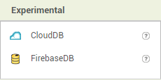

¿Qué es AppInventor y cómo funciona?
App Inventor es un entorno de desarrollo de software creado por Google Labs para la elaboración de aplicaciones destinadas al sistema operativo Android. El usuario puede, de forma visual y a partir de un conjunto de herramientas básicas, ir enlazando una serie de bloques para crear la aplicación. El sistema es gratuito y se puede descargar fácilmente de la web. Las aplicaciones creadas con App Inventor están limitadas por su simplicidad, aunque permiten cubrir un gran número de necesidades básicas en un dispositivo móvil. Puedes crear desde un juego como puede ser el ahorcado a una aplicación que dice lo que tu le escribas, a continuación adjunto dos tutoriales por si te interesa alguna de estas aplicaciones.

Para la creación de la interfaz gráfica de las aplicacciones de AppInventor disponemos de un menú con varias secciones: Interfaz de usuario, Disposición, Medios, Dibujo y animación, Maps, Sensores, Social, Almacenamiento, Conectividad, LEGO Mindstorms, Experimental y Extensión.
- En la pestaña de interfaz de usuario tenemos botones, contraseñas, sliders, etc.

- En la pestaña de Disposición hay diferentes contenedores en vertical, horizontal, tabular... para la distribución que desees de los diferentes elementos de la interfaz de usuario. No se podrá añadir nada de la anterior sección si no se dispone de al menos un contenedor.
- En Medios puedes incrustar diferentes reproductores de sonido, vídeo, etc.
- En la sección de Dibujo y animación podemos añadir un lienzo, una pelota y una imagen en movimiento. Solo se pueden añadir la pelota y la imagen al lienzo previamente mencionado, nunca a un contenedor y mucho menos a la pantalla directamente sin contenedor ni lienzo alguno.
- En la pestaña de Mapas se puede agregar un mapa de https://www.openstreetmap.org y agregarle un círculo, una línea, etc.
- En Sensores hay varios, como puede ser un acelerómetro, un lector de código de barras, un giroscopio, etc.
- En la ventana de Social hay un selector de contacto, selector de e-mail, llamada de teléfono, etc.
- En Almacenamiento hay Archivo (Para guardar archivos o recuperarlos), TinyBD (Componente no visible que permite almacenar datos) etc.
- En la pestaña de conectividad podemos establecer un cliente o servidor Bluetooth, acceder a una web, etc.
- En la sección de LEGO Mindstorms hay diferentes bloques para el control de sensores y motores para manjar tu robot LEGO con el móvil.
- En Experimental puedes añadir tu propia base de datos en línea

- Y por último tenemos la pestaña Extensiones en la que puedes importar tus extensiones para la aplicación.
Por otro lado tenemos la parte de la programación de la aplicación, obiamente todos los elementos que hayamos puesto en nuestra aplicación no van a funcionar solos, así que nos tocará decirles lo que queremos que hagan. Hay gran variedad de bloques que nos permiten hacer funcionar los elementos que hayamos incrustado en nuestra aplicación o incluso que interactúen entre ellos. La programación se lleva a cabo mediante bloques, pueden ser de: Control, Lógica, Matemáticas, Texto, Listas, Colores, Variables y Procedimientos.
- Los bloques de Control, como su nombre indica, nos permiten hacer un control general de la aplicación, desde cerrar una pantalla a aplicar condiciones.
- Los bloques de Lógica podemos juntarlos con los de control para aplicar condiciones de cierto, falso, etc.
- En los bloques de Matemáticas podemos hacer diversas operaciones numéricas.
- En Texto podemos jugar con texto y cadenas de texto, etc.
- Los bloques de Lista nos facilitan la creación de listas para tener determinados datos controlados.
- En Color tenemos 70 colores diferentes para interactuar con los demás bloques.
- En los bloques de Variables podemos darle nombre a datos que pueden ir cambiando durante el uso de la aplicación.
- Por último en los bloques de Procedimiento puedes agrupar varios bloques de los anteriormente mencionados para crear un nuevo bloque contenedor de éstos, herramienta muy útil para no cargar el espacio de trabajo de bloques cuando vas a repetir una secuencia muchas veces.
Debajo de los bloques aparecerán todos los elementos que hayamos añadido a nuestra interfaz gráfica, para empezar a programar simplemente haces clic en el objeto al que quieres añadirle la funcionalidad deseada y arastras los bloques que creas necesarios.
A continuaión os dejo un tutorial en el que os enseño como hacer una calculadora e iniciarse en AppInventor.